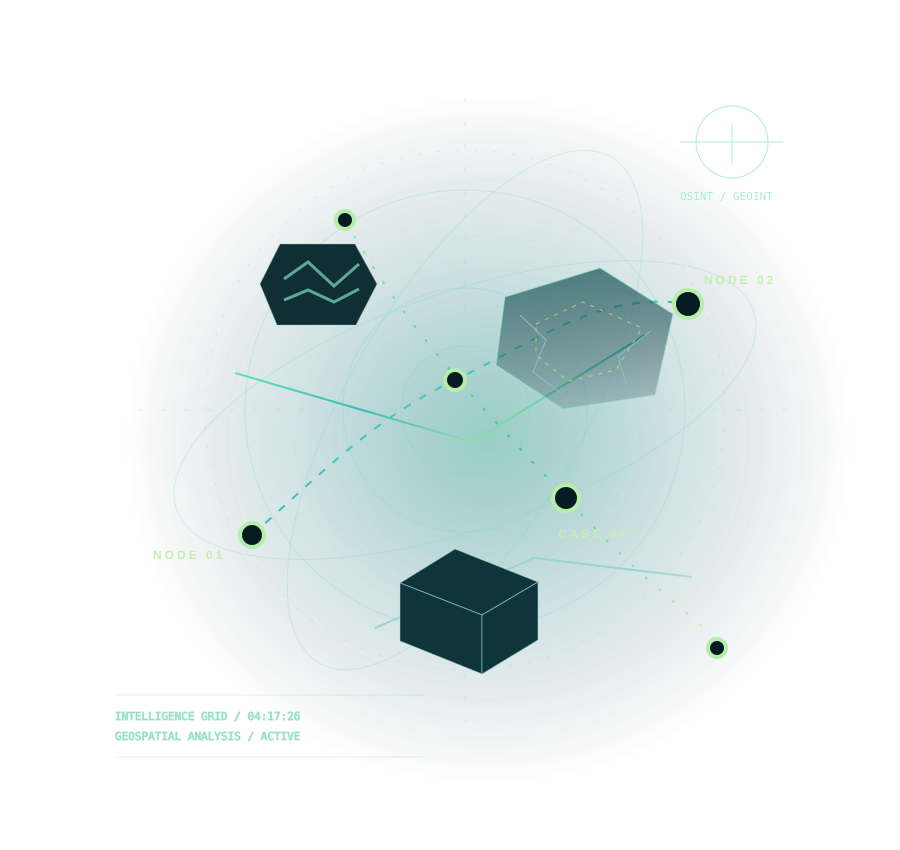

A CONNECTED INTELLIGENCE EXPERIENCE ● PROTOTYPE 01
AYLA3D
Uma central de inteligência conectada.
Explore a central e acesse a comunicação reservada a usuários autorizados.
ACCESS / MEMBERS ONLYPT • EN • ESAYLA — PRIVATE COMMS / 1.2

Explore a central e acesse a comunicação reservada a usuários autorizados.
Comunicação exclusiva entre usuários autorizados do Observatório.
Canal de usuários autorizados
Cinco mensagens por vez. As anteriores ficam no histórico.
Você identificou uma inconsistência documental, separou rotas observadas de destinos não confirmados e encaminhou os elementos para verificação pelas autoridades. Nenhuma prisão foi realizada sem investigação formal.